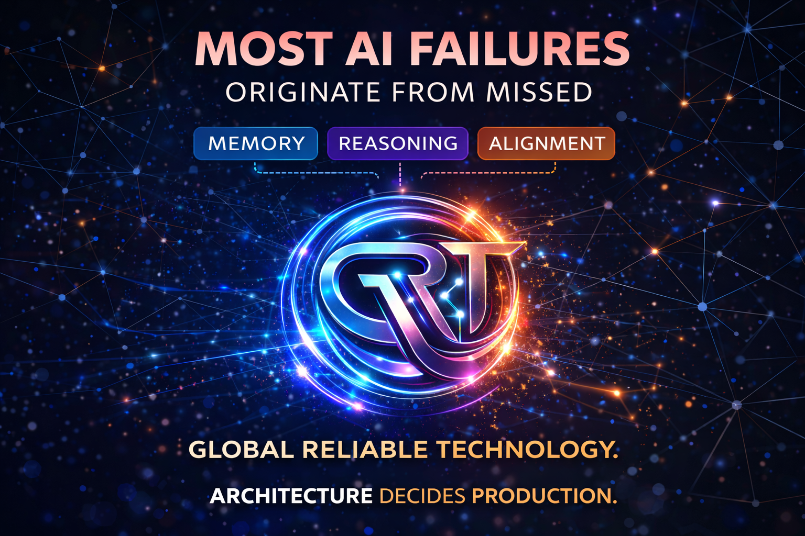

One precise insight per day to improve how you think and act.
Most people try to improve results. High performers improve decisions. Ask: “What information am I missing?”
Pause before your next decision and write one reason why it is correct.
Improve decision clarity
Act with precision
Build repeatable success
Most AI systems fail not because models are weak, but because architecture is incomplete.
Disconnected components lead to unreliable outcomes.
Failures are discovered too late, after user impact.
Systems collapse instead of degrading gracefully.
An architecture-first approach to building intelligence systems that are stable, explainable, and production-ready.
Design systems before deploying models.
Measure confidence, risk, and system behavior.
Build for real-world conditions, not demos.
This is not experimental AI. This is engineering for real-world reliability.
Fraud detection and anomaly monitoring.
Reliable decision-making under uncertainty.
Predict and mitigate system failures early.
Most AI failures originate from architecture gaps, not model limitations.

Intelligence is not a model — it is a structured system of memory, reasoning, alignment, and controlled decision flow.
Stores structured context and system state for decision grounding.
Processes uncertainty and evaluates multiple possible outcomes.
Chooses optimal action based on confidence and risk surface.
Applies controlled actions with fallback and monitoring systems.
AI systems detecting financial anomalies in large scale systems.
Reliability frameworks for safety-critical automation.
Analyzing future risk surfaces in AI deployments.
Stress-test architectural decisions in a controlled environment.
Enter Reliability Lab →Estimate preventable loss exposure before full architecture simulation.
Explore interactive intelligence simulations and engineering tools.
Open AI Lab →Move beyond experiments. Build systems that survive production.
Start Now →